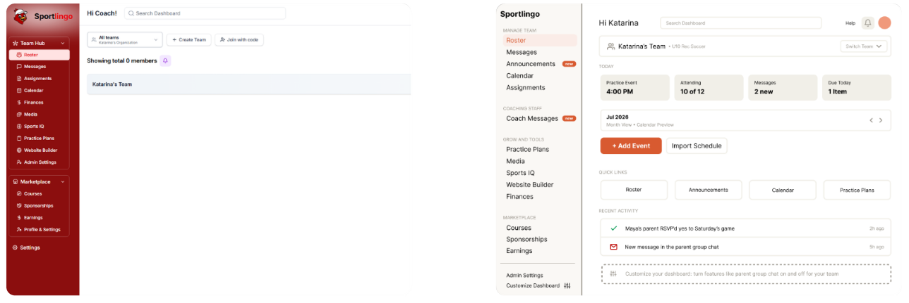

01. Overview
Sportlingo is an educational gaming platform built around coaching young athletes. As part of a UX assessment, I conducted a full research-driven redesign of their coaching dashboard, starting with an independent usability review, then validating and evolving my design through a real interview with a competitive gymnastics coach.
02. Opportunity
Before talking to any users, I reviewed the existing dashboard cold and found real structural issues: a confusing "Team Hub" landing state that buried the roster behind an extra click, ten flat sidebar items with no grouping by frequency, duplicate entry points for the same task (two notification icons, two ways to import a schedule), and a dead empty state that offered nothing once a coach had already scheduled something. I saw an opportunity to reduce this friction and rebuild the dashboard around how coaches actually work day to day.
03. Design Process
I built a first-pass redesign (Iteration 1) based entirely on my own usability review, consolidating duplicate actions, softening an overly heavy visual tone, and adding a persistent weekly snapshot in place of the dead empty state.
I then interviewed a competitive gymnastics coach with 6 years of experience to react to both the original dashboard and my redesign. Their feedback reshaped the direction more than I expected. They pointed out that a "This week" view didn't match how they actually think, they open the dashboard wanting to know what's happening today. They also flagged that several core features, like parent group chat, are built around team-sport assumptions and are actively unwanted in an individual sport like gymnastics. And they surfaced a gap I hadn't considered at all: there was no way for coaches to message each other, only coach-to-family.
Iteration 2 responded directly to that feedback: a "Today" default view, a customization option to toggle features on or off per coaching context, a separate coach-to-coach messaging channel, and a dedicated announcements tab distinct from two-way messaging.

Original dashboard (left) vs. Iteration 2, redesigned around direct coach feedback (right).
04. Solution & Results
The final redesign moves from a rigid, one-size-fits-all layout to a dashboard that adapts to how a coach actually works and what sport they coach. It also surfaced a broader insight beyond the interface itself: not every coaching pain point is a design problem. The coach's most difficult daily challenge, managing parent expectations around skill progression, isn't something any dashboard can fix. That distinction shaped how I think about what UX design can and can't solve.
View the Prototype
Explore the interactive website prototype for Sportlingo, showcasing the design. Click below to see the full experience in Figma.
View PrototypeView the Full Case Study
Curious about the research behind the redesign? The full case study includes the complete coach interview, key quotes, structural findings from my initial usability review, and a breakdown of what changed between Iteration 1 and Iteration 2, and why.
View Case Study